SEO AND UX - A SYNERGIC APPROACH
HOW DOES GOOGLE WORK?
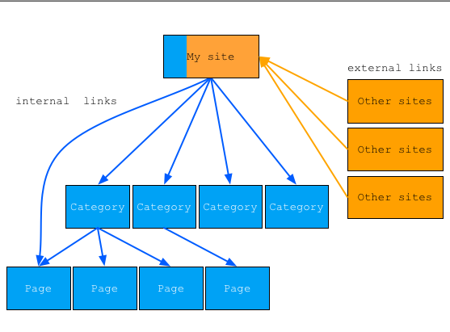
SEO AND UX
WHY?
Just SEO + visits + traffic + users + reviews + data + $
Just UX + recurring visits + conversion rate + interactions + referral links + new content + community activity + value + $


YOU WOULDN’T BELIEVE THAT…
5 MYTHS TO BUST
SMM (Social Media Marketing) is about increasing traffic Anybody deserves to be bothered for a Facebook like Don't invest in market segment already exploited Talk with your customers Code has no taste
MYTH 1 - SMM (SOCIAL MEDIA MARKETING) IS ABOUT INCREASING TRAFFIC
SMM BUILDS TRUST
? Where is my target? ? What is the content I want my brand to be linked to? ? How do I recover energies spent in SMM? ? Why do I want to influence my user flow? # Focus # Community trust # Google trust
 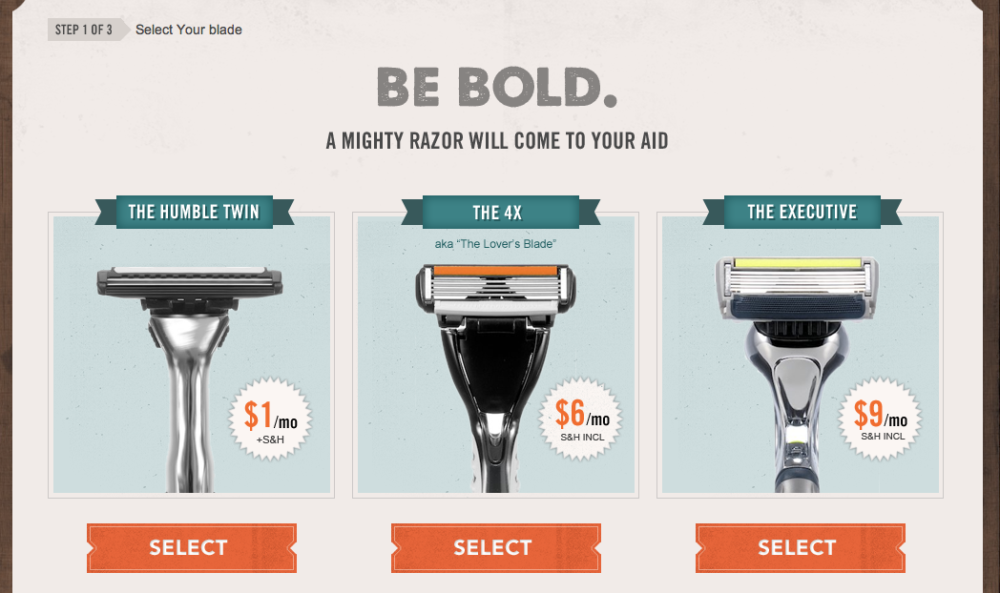
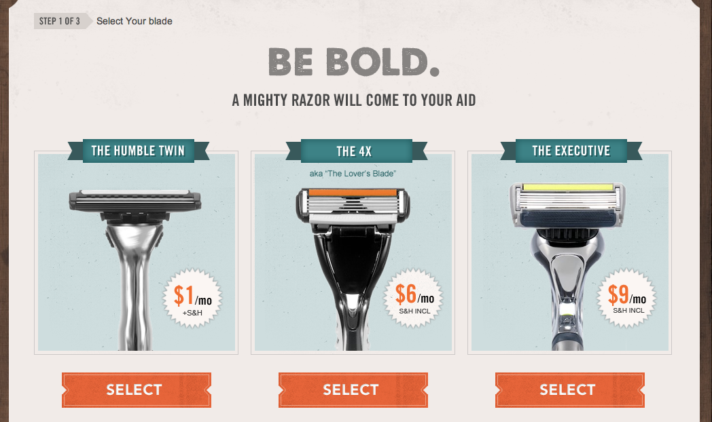 

MYTH 2 - ANYBODY DESERVES TO BE BOTHERED FOR A FACEBOOK LIKE
CONTENT IS KING


MYTH 3 - DON’T INVEST IN MARKET SEGMENT ALREADY EXPLOITED
FIND YOUR PERFECT FIT
@ Shaving; @ High-end fashion; @ GTD; @ Personal finance; @ Hand writing;

 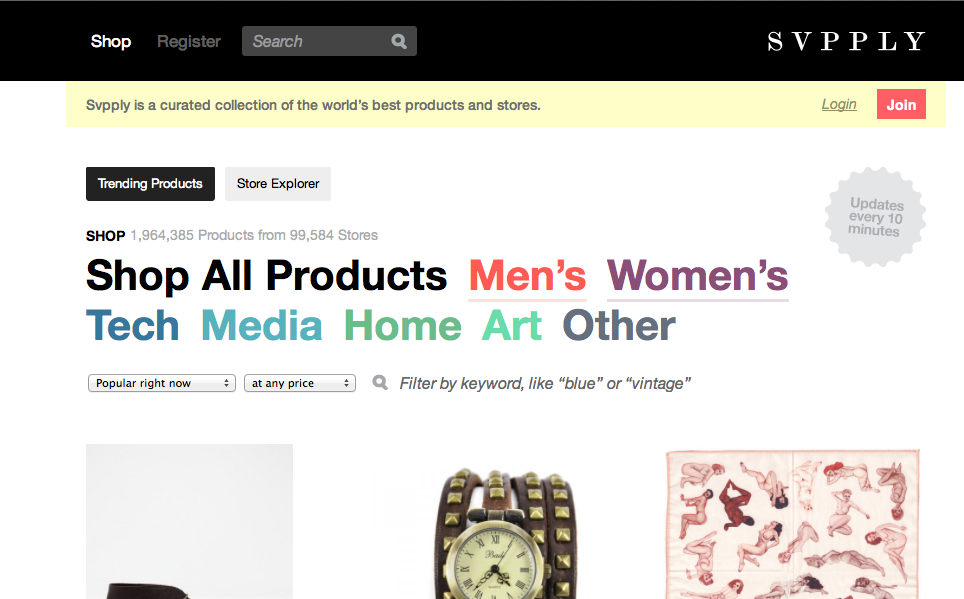
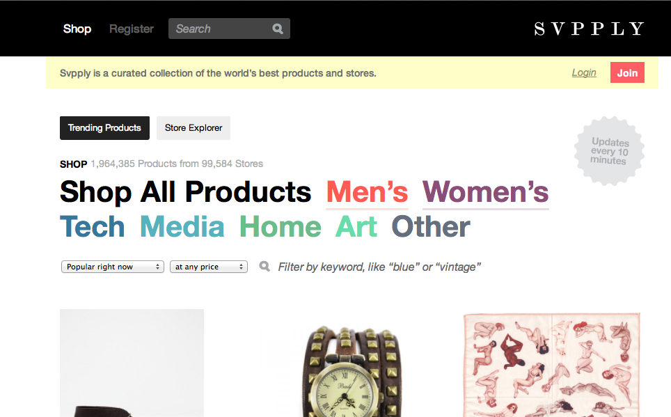  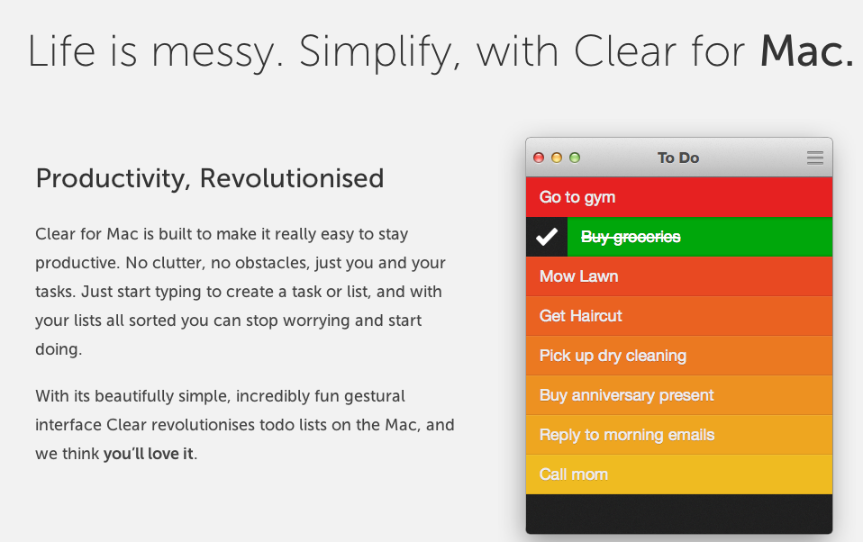
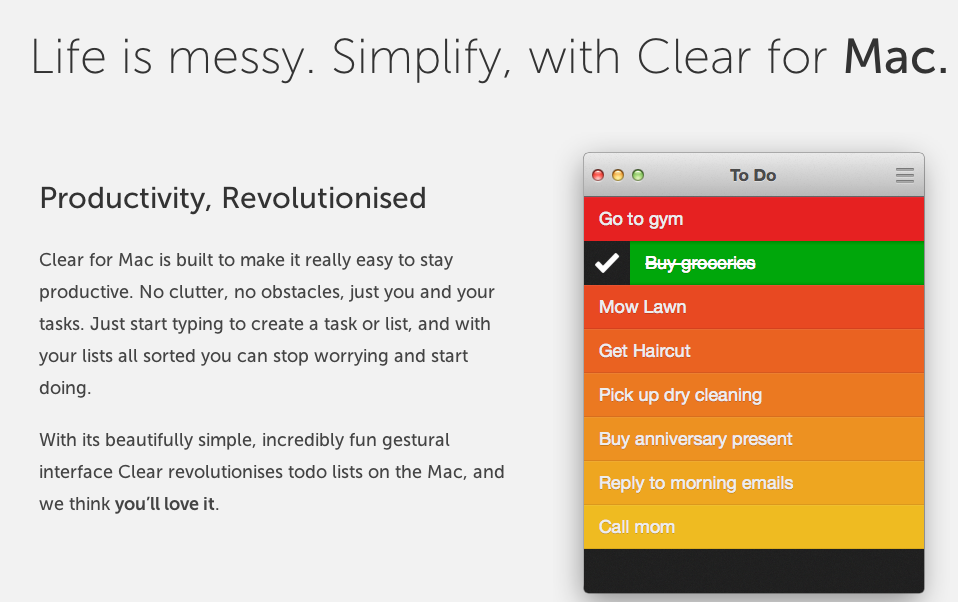
MYTH 4 - TALK WITH YOUR CUSTOMERS
ADOPT A CONSISTENT STRATEGY
Don’t care about them @ Clear; @ MoneyWiz; Take advantage of them for marketing tactics # Samsung;
User feedback are key if filtered with a given methodology and integrated into a solid development strategy


 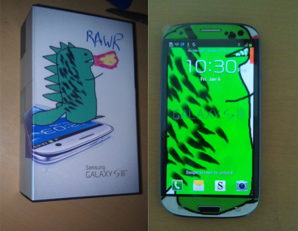
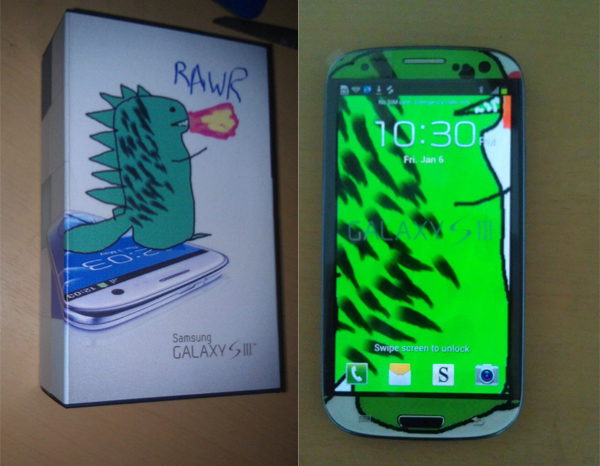
MYTH 5 - CODE HAS NO TASTE
VANILLA CODE IS TASTY!
Pay attention to $ robot.txt $ webmaster tool $ submit to index $ sitemap xml $ tag description
..and to $ h1 title $ pretty url $ alt tag images and video $ flat information architecture $ performances' optimizzion
 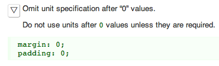 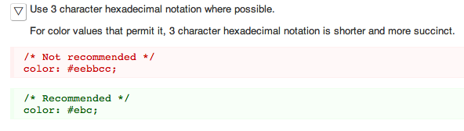
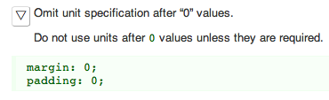 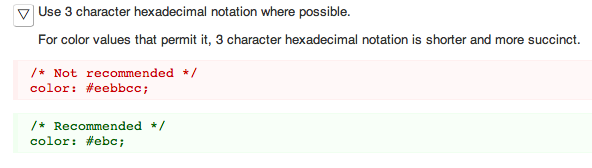 


Contact
claudio.petrarulo@gmail.com we@thedoersproject.com